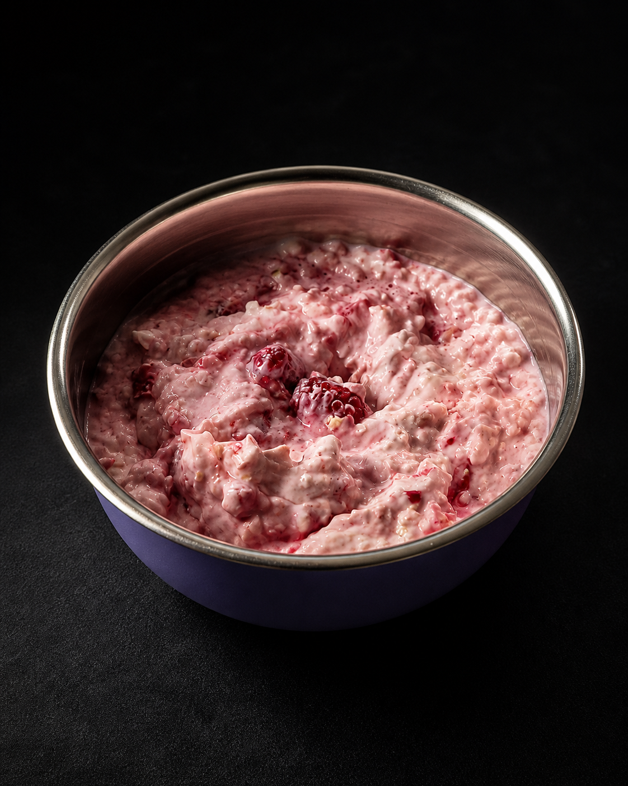

Bowlcake framboises

Version protéiné
Ingrédients
- 100 g de framboises (ou fruits rouges au choix)
- 50 g de flocons d'avoine
- 50 ml de lait (lait demi-écrémé conseillé)
- 180 g de skyr 0%
- 1 scoop de whey goût vanille (≈25–30 g)
Préparation
- Dans un bol assez grand, mettre les framboises, les flocons d'avoine, le lait, le skyr et la whey.
- Mélanger vigoureusement jusqu'à obtenir une préparation homogène.
- Ajouter de l'eau petit à petit (ou un peu plus de lait) pour ajuster la texture souhaitée.
- Consommer immédiatement ou laisser reposer quelques minutes pour que les flocons ramollissent.
Valeurs nutritionnelles (approx.)
Par portion : 457 kcal • 50 g protéines • 6 g lipides • 46 g glucides • 13 g fibres
Version sans whey
Ingrédients
- 100 g de framboises (ou fruits rouges au choix)
- 50 g de flocons d'avoine
- 50 ml de lait (lait demi-écrémé conseillé)
- 230 g de skyr 0%
Préparation
- Dans un bol assez grand, mettre les framboises, les flocons d'avoine, le lait et le skyr.
- Mélanger vigoureusement jusqu'à obtenir une préparation homogène.
- Ajouter de l'eau petit à petit (ou un peu plus de lait) pour ajuster la texture souhaitée.
- Consommer immédiatement ou laisser reposer quelques minutes pour que les flocons ramollissent.
Valeurs nutritionnelles (approx.)
Par portion : 349 kcal • 24 g protéines • 5 g lipides • 45 g glucides • 13 g fibres